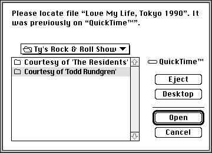

Getting a Movie From a File
Before your application can work with a movie, you must load the movie from its file. Your application must open the movie file and create a new movie from the movie stored in the file. You can then work with the movie. Use theOpenMovieFilefunction (described on page 2-86) to open a movie file. Use theNewMovieFromFile
function (described on page 2-76) to load a movie from a movie file. The code in Listing 2-2 shows how you can use these functions.Listing 2-2 Getting a movie from a file
Movie GetMovie (void) { OSErr err; SFTypeList typeList = {MovieFileType,0,0,0}; StandardFileReply reply; Movie aMovie = nil; short movieResFile; StandardGetFilePreview (nil, 1, typeList, &reply); if (reply.sfGood) { err = OpenMovieFile (&reply.sfFile, &movieResFile, fsRdPerm); if (err == noErr) { short movieResID = 0; /* want first movie */ Str255 movieName; Boolean wasChanged; err = NewMovieFromFile (&aMovie, movieResFile, &movieResID, movieName, newMovieActive, /* flags */ &wasChanged); CloseMovieFile (movieResFile); } } return aMovie; }QuickTime movies are stored in movie files. The Movie Toolbox uses the features of the Alias Manager and the new File Manager functions to manage a movie's references to its data (see "The Movie Toolbox and System 6" which begins on page 2-54 for more information about these features). A movie file does not necessarily contain the movie's data. The movie's data may reside in other files, which are referred to by the movie file.When your application instructs the Movie Toolbox to play a movie, the toolbox attempts to collect the movie's data. If the movie has become separated from its data, the Movie Toolbox uses the features of the Alias Manager to locate the data files. During this search, the Movie Toolbox automatically displays a dialog box similar to that shown in Figure 2-26. The user can cancel the search by clicking the Stop button.
Figure 2-26 A dialog box used when searching for a movie's data
The Movie Toolbox performs a number of tests to verify that the file selected by the user is appropriate for the current movie. These tests include checking the creation date of the found file against the expected date and checking the size of the found file. The Movie Toolbox displays a dialog box similar to the one shown in Figure 2-27.
Figure 2-27 A dialog box that informs the user the movie file cannot be found
The user has two options:
If the Movie Toolbox cannot locate a needed file, it displays a dialog box that allows the user to specify a file to try. Figure 2-28 shows a sample dialog box.
- by clicking Search, the user acknowledges the warning; the Movie Toolbox allows the user to locate a different data file
- by clicking Cancel, the user instructs the Movie Toolbox to ignore the current data reference--the Movie Toolbox tries to play the movie without the corresponding movie data
Figure 2-28 A dialog box that allows the user to specify a movie file to try

If the user chooses a file that is not a valid movie file, it displays an alert similar to the one shown in Figure 2-29.
Figure 2-29 An alert for an invalid movie file
Figure 2-30 An alert when QuickTime cannot be found